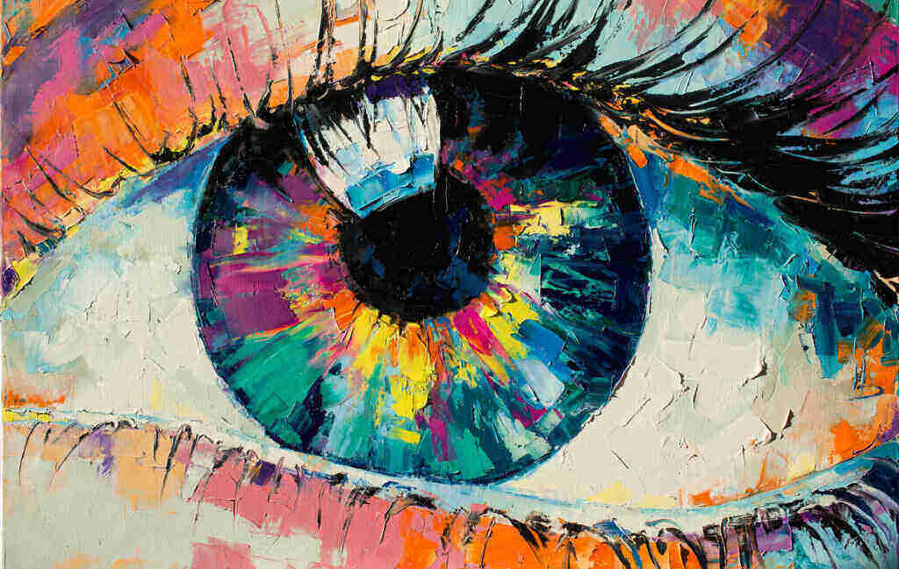
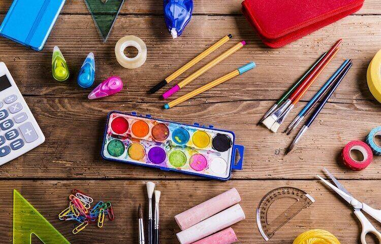

Online Artwork
What is one of the biggest problems artists are faced with in today's day and age? Getting discovered and letting the world know about their art. Not having enough exposure to your art can make life challenging especially if you are trying to make a living off of it. Letting people see your work will help them make an emotional connection and trust with your pieces. The more they trust your work, the more you will be able to sell to customers to help them make their lives more beautiful. This will help you gain exposure and credibility as an artist. More people will want your work. So how do you help the world see your work? Well, there are many ways to help people gain these connections with your work and displaying your art online can be a fantastic way.
